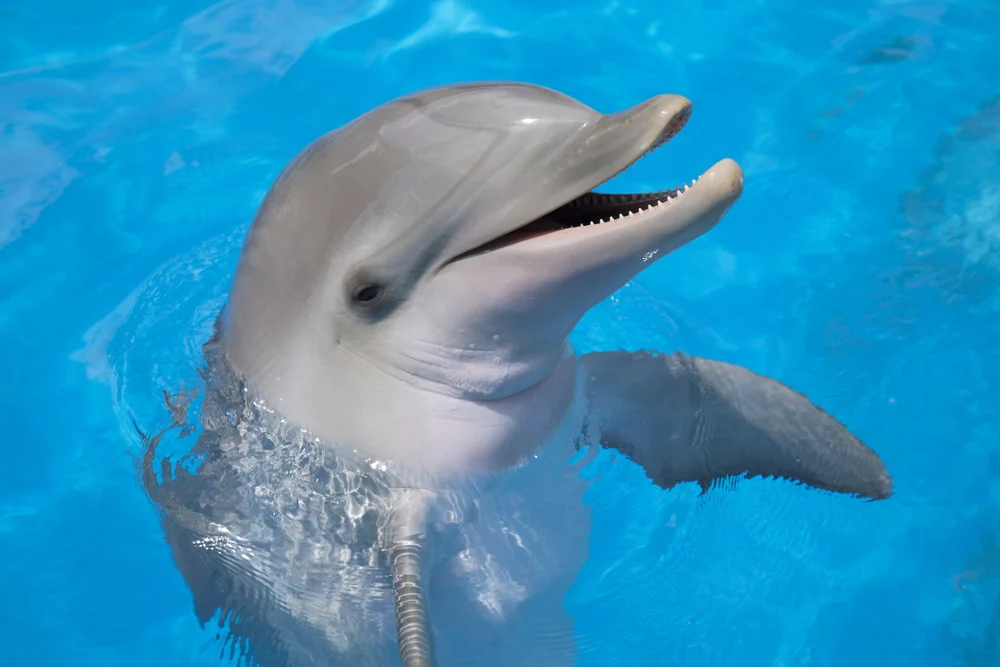

Los delfines (Delphinidae), llamados también delfines oceánicos para distinguirlos de los platanistoideos o delfines de río, son mamíferos de una familia de cetáceos odontocetos muy heterogénea, que comprende 37 especies actuales. Miden entre 2 y 8 metros de largo, con el cuerpo fusiforme y la cabeza de gran tamaño, el hocico alargado y solo un espiráculo en la parte superior de la cabeza (orificio respiratorio que muchos animales marinos tienen como contacto del aire o agua con su sistema respiratorio interno). Son carnívoros estrictos. Están entre las especies más inteligentes que habitan en el planeta. Se encuentran relativamente cerca de las costas y a menudo interactúan con el ser humano. Como otros cetáceos, los delfines utilizan los sonidos, la danza y el salto para comunicarse, orientarse y alcanzar sus presas; además utilizan la ecolocalización. Hoy en día, las principales amenazas a las que están expuestos son de naturaleza antrópica.
| Género | Especie (binominal) | Nombre vernáculo |
|---|---|---|
| Australodelphis † | Australodelphis mirus † | (Delfín del Plioceno de la Antártida)[16] |
| Cephalorhynchus | Cephalorhynchus commersonii | Tonina overa |
| Cephalorhynchus | Cephalorhynchus eutropia | Tonina chilena |
| Cephalorhynchus | Cephalorhynchus heavisidii | Delfín de Heaviside |
| Cephalorhynchus | Cephalorhynchus hectori | Delfín de Héctor |
| Delphinus | Delphinus capensis | Delfín común costero |
| Delphinus | Delphinus delphis | Delfín común oceánico |
| Eodelphinus † | Eodelphinus kabatensis † | (Delfín del Mioceno superior de Japón)[17][18] |
| Feresa | Feresa attenuata | Orca pigmea |
| Globicephala | Globicephala macrorhynchus | Calderón de aleta corta |
| Globicephala | Globicephala melas | Calderón común |
| Grampus | Grampus griseus | Delfín de Risso |
| Lagenodelphis | Lagenodelphis hosei | Delfín de Fraser |
| Lagenorhynchus | Lagenorhynchus acutus | Delfín del Atlántico |
| Lagenorhynchus | Lagenorhynchus albirostris | Delfín de hocico blanco |
| Lagenorhynchus | Lagenorhynchus australis | Delfín austral o antártico |
| Lagenorhynchus | Lagenorhynchus cruciger | Delfín cruzado |
| Lagenorhynchus | Lagenorhynchus obliquidens | Delfín del Pacífico de lados blancos |
| Lagenorhynchus | Lagenorhynchus obscurus | Delfín oscuro o de Fitzroy |
| Lissodelphis | Lissodelphis borealis | Delfín septentrional sin aleta |
| Lissodelphis | Lissodelphis peronii | Delfín meridional sin aleta |
| Orcaella | Orcaella brevirostris | Delfín beluga del río Irrawaddy |
| Orcaella | Orcaella heinsohni | Delfín beluga de Heinsohn |
| Orcinus | Orcinus orca | Orca común |
| Peponocephala | Peponocephala electra | Delfín de cabeza de melón |
| Platalearostrum † | Platalearostrum hoekmani † | (Calderón del Plio-Pleistoceno del mar del Norte)[19] |
| Protoglobicephala † | Protoglobicephala mexicana † | (Delfín del Plioceno del golfo de California)[20] |
| Pseudorca | Pseudorca crassidens | Falsa orca |
| Sotalia | Sotalia fluviatilis | Tucuxi |
| Sotalia | Sotalia guianensis | Delfín costero |
| Sousa | Sousa chinensis | Delfín rosado de Hong Kong |
| Sousa | Sousa teuszii | Delfín giboso atlántico |
| Stenella | Stenella attenuata | Delfín ensillado o manchado tropical |
| Stenella | Stenella clymene | Delfín acróbata de hocico corto |
| Stenella | Stenella coeruleoalba | Delfín listado |
| Stenella | Stenella frontalis | Delfín manchado del Atlántico |
| Stenella | Stenella longirostris | Delfín acróbata de hocico largo |
| Steno | Steno bredanensis | Delfín de hocico estrecho |
| Tursiops | Tursiops aduncus | Delfín del Indo-Pacífico |
| Tursiops | Tursiops australis | Delfín burrunan |
| Tursiops | Tursiops truncatus | Delfín nariz de botella o mular |